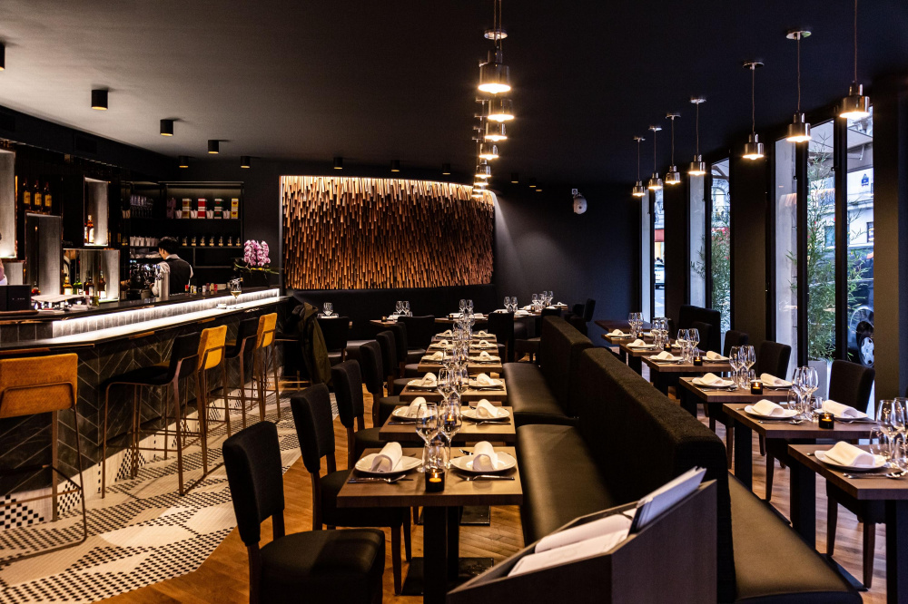
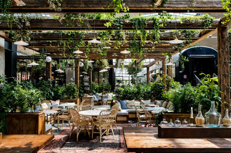
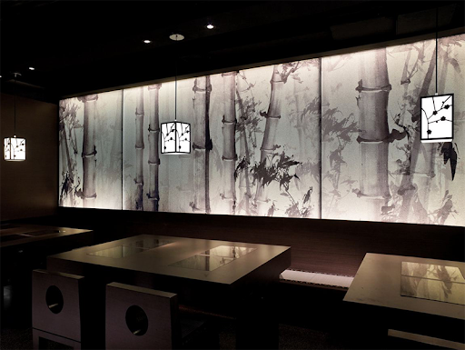

"Une expérience inoubliable"
Jiniss a été fondé dans le but de ravir la foule variée de la région parisienne avec une authentique expérience de restaurant asiatique. Ancré dans la tradition, nous cherchons à faire de chaque élément de votre temps avec nous un moment spécial. Restaurant proposant des plats typiques de la cuisine asiatique.
Venez déguster les saveurs d'Asie en plein coeur du 15ème arrondissement de Paris dans un cadre tendance et dépaysant. Ici, nous cuisinons tous nos mets sur place avec amour à partir de produits bruts. Nos produits frais sont issus d'agriculture biologique ou raisonnée, d'élévages fermiers et de peche durable.



Découvrir l'univers